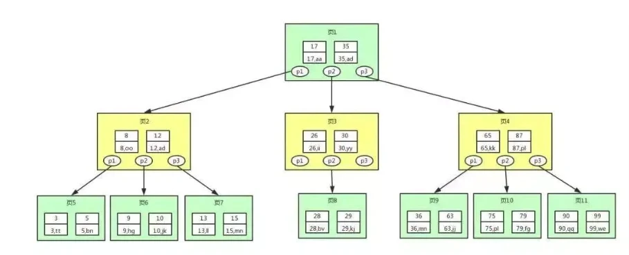
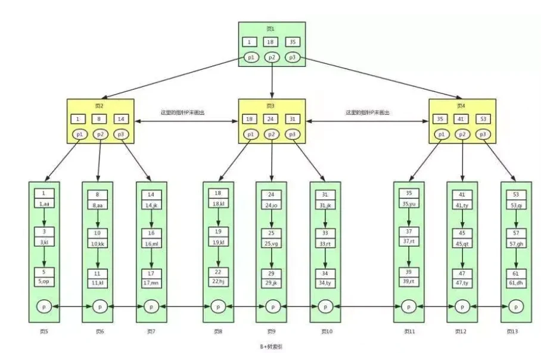

- 建立（a,b,c）索引
- a=xxx,b=xxx,c=xxx 走（a,b,c）索引
- a=xxx,c=xxx,b=xxx 走（a,b,c）索引，这种情况数据库会自动优化成联合索引
- a=xxx,c=xxx 走的是a索引
- a=xxx,b!=xxx 走的是a索引
- a=xxx,b<xxx,c=xxx 走的是(a,b)索引，会在<停止
- a=xxx,order by b 走的是a索引，因为联合索引（a,b,c）是先排序a，在排序b，在排序c，而先排序b显然是不行的
- a=xxx or d=xxx ,不走索引
- a=xxx and d=xxx 只有a索引
- a<xxx, 可能走a索引，也可能不走a索引，具体要看记录中符合
a<xxx的数量，如果符合的数量很多，那么优化器就会认为此时走索引的价值不大，会进行全表扫描，如果符合的数量很少，那么优化器会任务走索引的更快，从而走索引。这和a=xxx,b<xxx走(a, b)索引并不冲突，因为先走a导致大部分数据已经被剔除了，索引此时走b索引是有价值的
补充：如何看联合索引走的那几个所以，只要通过explain看一下key_len字段就可以了
核心概念
- 主键索引/二级索引
- 聚簇索引/非聚簇索引
- 回表/索引覆盖
- 索引下推
- 联合索引/最左联合匹配
- 前缀索引
一、[索引定义]
1.索引定义
在数据之外，数据库系统还维护着满足特定查找算法的数据结构，这些数据结构以某种方式引用（指向）数据，这样就可以在这些数据结构上实现高级查找算法。这种数据结构，就是索引。
2.索引的数据结构
- B树 / B+树 (mysql的innodb引擎默认选择B+树作为索引的数据结构)
- HASH表
- 有序数组
3.选用B+树而不选用B树作为索引
- B树的数据结构：record记录存放在树的节点中
- B+树的数据结构: record记录只存放在树的叶子节点中


- 假设一条数据大小1KB，索引大小16B，数据库采用磁盘数据页存储，磁盘页默认大小是16K。同样三次IO:
- B树能获取16*16*16=4096条数据
- B+树能够获取1000*1000*1000=10亿条数据
二、[索引类型]
1.主键索引和二级索引
- 主键索引：索引的叶子节点是数据行
- 二级索引：索引的叶子节点是KEY字段加主键索引，因此，通过二级索引询首先查到是主键值，然后InnoDB再根据查到的主键值通过主键索引找到相应的数据块。
- innodb的主索引文件上 直接存放该行数据,称为聚簇索引,次索引指向对主键的引用
- myisam中, 主索引和次索引,都指向物理行(磁盘位置).
2.聚簇索引和非聚簇索引
聚簇索引是对磁盘上实际数据重新组织以按指定的一个或多个列的值排序的算法。特点是存储数据的顺序和索引顺序一致。一般情况下主键会默认创建聚簇索引，且一张表只允许存在一个聚簇索引（理由：数据一旦存储，顺序只能有一种）。
相较于聚簇索引的叶子点击是数据记录，非聚簇索引的叶子节点是指向数据记录的指针。非聚簇索引与聚簇索引最大的不同就是数据记录的顺序跟索引是不一致的，因此在数据
我们知道 Mysql 底层是用 B+ 树来存储索引的，且数据都存在叶子节点。对于 InnoDB 来说，它的主键索引和行记录是存储在一起的，因此叫做聚集索引（clustered index)。
PS：MyISAM 的行记录是单独存储的，不和索引在一起，因此 MyISAM也就没有聚集索引。
除了聚集索引，其它索引都叫做非聚集索引（secondary index）。包括普通索引，唯一索引等。
另外需要注意，在 InnoDB 中有且只有一个聚集索引。它有三种情况：
- 若表存在主键，则主键索引就是聚集索引。
- 若不存在主键，则会把第一个非空的唯一索引作为聚集索引。
- 否则，就会隐式的定义一个 rowid 作为聚集索引。
3.聚簇索引优劣
优势: 根据主键查询条目比较少时，不用回行(数据就在主键节点下)
劣势: 如果碰到不规则数据插入时，造成频繁的页分裂。

三、[索引概念引申]
1.回表
回表的概念涉及到主键索引和非主键索引的查询区别
- 如果语句是
select * from T where ID=500，即主键查询，则只需要搜索 ID 这棵树。 - 如果语句是
select * from T where k=5，即非主键索引查询，则需要先搜索 k 索引树，得到 ID 的值为 500，再到 ID 索引树搜索一次。 - 从非主键索引回到主键索引的过程称为回表。
基于非主键索引的查询需要多扫描一棵索引树。因此，我们在应用中应该尽量使用主键查询。而从存储空间的角度讲，因为非主键索引树的叶结点存放的是主键的值，那么，应该考虑让主键的字段尽量短，这样非主键索引的叶子结点就越小，非主键索引占用的空间也就越小。一般情况下，建议创建一个自增主键，这样非主键索引占用的空间最小。
2.索引覆盖
- 如果where子句中的一个条件是非主键索引，那么查询的时候，先通过非主键索引定位到主键索引（主键位于非主键索引搜索树的叶子节点）；然后通过主键索引定位到查询的内容。在这个过程中，回到主键索引树的过程，称为回表。
- 但是当我们的查询内容是主键值，那么可以直接提供查询结果，不需要回表。也就是说，在这个查询里，非主键索引 已经 “覆盖了” 我们的查询需求，故称为覆盖索引。
- 覆盖索引就是从辅助索引中就能直接得到查询结果，而不需要回表到聚簇索引中进行再次查询，所以可以减少搜索次数（不需要从辅助索引树回表到聚簇索引树），或者说减少 IO 操作（通过辅助索引树可以一次性从磁盘载入更多节点），从而提升性能。
3.联合索引
联合索引是指对表上的多个列进行索引。
场景一：
联合索引 (a, b) 是根据 a, b 进行排序（先根据 a 排序，如果 a 相同则根据 b 排序）。因此，下列语句可以直接使用联合索引得到结果（事实上，也就是用到了最左前缀原则）
- select … from xxx where a=xxx;
- select … from xxx where a=xxx order by b;
而下列语句则不能使用联合查询：
- select … from xxx where b=xxx;
场景二：
对于联合索引 (a, b, c)，下列语句同样可以直接通过联合索引得到结果：
- select … from xxx where a=xxx order by b;
- select … from xxx where a=xxx and b=xxx order by c;
而下列语句则不行，需要执行一次 filesort 排序操作。
- select … from xxx where a=xxx order by c;
总结：
以联合索引(a,b,c)为例，建立这样的索引相当于建立了索引a、ab、abc三个索引。一个索引顶三个索引当然是好事，毕竟每多一个索引，都会增加写操作的开销和磁盘空间的开销。
4.最左匹配原则
- 从上面联合索引的例子，可以体会到最左前缀原则。
- 不只是索引的全部定义，只要满足最左前缀，就可以利用索引来加速检索。这个最左前缀可以是联合索引的最左 N 个字段，也可以是字符串索引的最左 M 个字符。利用索引的 “最左前缀” 原则来定位记录，避免重复定义索引。
- 因此，基于最左前缀原则，我们在定义联合索引的时候，考虑如何安排索引内的字段顺序就至关重要了！评估的标准就是索引的复用能力，比如，当已经有了 (a,b) 字段的索引，一般就不需要再单独在 a 上建立索引了。
5.索引下推
MySQL 5.6 引入了索引下推优化，可以在索引遍历过程中，对索引中包含的字段先做判断，过滤掉不符合条件的记录，减少回表字数。
- 建表
CREATE TABLE `test` (
`id` bigint(20) NOT NULL AUTO_INCREMENT COMMENT '自增主键',
`age` int(11) NOT NULL DEFAULT '0',
`name` varchar(255) CHARACTER SET utf8 NOT NULL DEFAULT '',
PRIMARY KEY (`id`),
KEY `idx_name_age` (`name`,`age`)
) ENGINE=InnoDB DEFAULT CHARSET=utf8mb4 COLLATE=utf8mb4_unicode_ci;
- 创建数据

SELECT * from user where name like '陈%'最左匹配原则，命中idx_name_age索引SELECT * from user where name like '陈%' and age=20- 5.6版本之前，先根据name索引(此时是忽略
age=20这个条件的)，匹配2条记录，然后找到对应的2个id。回表之后，在根据age=20进行过滤 - 5.6版本之后，会加入索引下推，在根据name匹配到2条数据之后，此时不会忽略
age=20条件，在回表之前就会根据age进行过滤。此即索引下推，可以减少回表的数据量，增加查询性能
- 5.6版本之前，先根据name索引(此时是忽略
6.前缀索引
当索引是很长的字符序列时，这个索引将会很占内存，而且会很慢，这时候就会用到前缀索引了。通常可以索引开始的几个字符，而不是全部值，以节约空间并得到好的性能。所谓的前缀索引就是使用索引的前面几个字母作为索引，但是要降低索引的重复率，索引我们还必须要判断前缀索引的重复率。
- 先计算当前字符串字段的唯一性占比：
select 1.0*count(distinct name)/count(*) from test - 在计算不同前缀的唯一性占比：
select 1.0*count(distinct left(name,1))/count(*) from test取name字符串第一个作为前缀索引的占比select 1.0*count(distinct left(name,2))/count(*) from test取name字符串前两个作为前缀索引的占比- …
- 当
left(str, n)的n不在显著增加时，此时可以选取n作为前缀索引的截取数 - 创建索引
alter table test add key(name(n));
[引自]：
1.再谈数据库索引